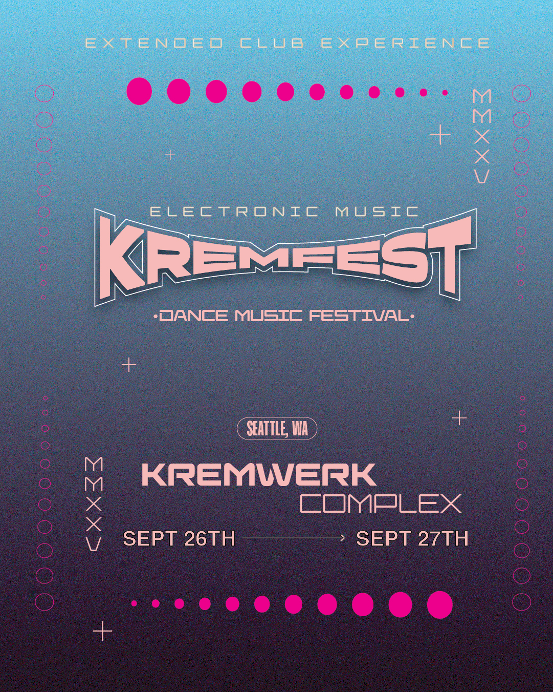

Where Electronic Music Meets Virtual Reality
Curated by VRMakerDome & UpLiftVR Studios, the 5th edition of the KremFest XR Showcase brings room-scale VR, 6DoF sci-fi narratives, and mind-bending 360° audio-reactive visuals directly into Seattle's premier electronic music festival at the Kremwerk Complex.

🌟 Headlining Experiences (UpLiftVR Studios)

UpLiftVR ‘Maiden Flight’ Balloon Ride
Feeling as if you are lifting into the heavens on a balloon ride's maiden flight and find yourself overlooking a wondrous land calling out to be explored.
Step into the headset and launch into the heavens on a balloon ride's experimental maiden flight. As you ascend above the clouds, you find yourself overlooking a wondrous, lucid dreamlike land calling out to be explored. During your descent from the clouds to the grounds below, you get the feeling that this is just the beginning of a series of grand adventures.

High Desert Eclipse
From a remote majestic hilltop overlook see the rapidly encroaching shadow of the moon turn day into twilight as the entire scenic horizon becomes sunrise and sunset during the high desert eclipse.
High Desert Eclipse is a 4K 360° documentary short filmed from a majestic hilltop overlook in the remote Oregon high desert during the Great American Eclipse of August 21, 2017. Spanning 120 seconds pre- and post-totality, the rapidly encroaching shadow of the moon turns day into twilight while the entire panoramic horizon transforms into a simultaneous 360-degree sunset and sunrise.
🗺️ Multi-Year Festival Archives & History
2026 Live Portal
FilmFreeway submissions portal, deadlines, and live lineup staging.
Enter 2026 Portal ➔2025 Retrospective
Post-pandemic showcase with Max Q, Noises, and The Encounter.
View 2025 Archive ➔2019 Program Guide
International selections presented in HTC Vive & Oculus Go.
View 2019 Guide ➔2018 Showcase
Symbion Project's Bloodthirsty, Lionhearted, and RocketMan.
View 2018 Archive ➔2017 Genesis
First VR pilot at KremFest 2017 powered by Kinetoscope VR.
View 2017 Genesis ➔🏛️ About the Presenters
Curated by VRMakerDome
The Kremfest XR Showcase is curated and presented by VRMakerDome, a Seattle-based collective dedicated to supporting and showcasing the Pacific Northwest's immersive arts and creator community.
Hosted by Kremfest
Kremfest is the flagship multimedia arts festival from Kremwerk, celebrated as a vital hub for forward-thinking electronic music, cutting-edge creativity, and Seattle's diverse and inclusive arts community.
Headlining Experiences by UpLiftVR Studios
Headline experiences are created by UpLiftVR Studios, an independent studio focused on crafting immersive VR journeys that spark wonder, connection, and joy.
📸 Previous KremFest XR Atmosphere
First launched in 2017, the Kremfest XR Showcase has become a beloved part of the festival—a unique space where Seattle’s eclectic electronic music scene collides with groundbreaking XR storytelling.